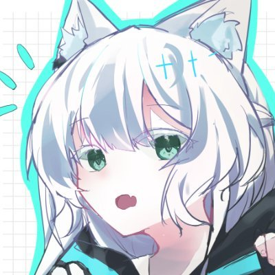

「ポケスペ次世代Shooting Stars!」のキャラクター。
第一章、第五章における主人公枠。
| 名前 | シトラール |
|---|---|
| 陣営 | 図鑑所有者 |
| 一人称 | オレ |
| 二人称 | お前 |
| 性別 | 男 |
| 年齢 | 11歳(第一章)→14歳(第五章) |
| 誕生日 | 9月7日 |
| 血液型 | A型 |
| 身長 | 150cm(第一章) |
| 出身地 | カントー地方トキワシティ |
| 登場章 | 第一章、第五章 |
| 代名詞 | 与える者 |
| 家族構成 | 父、母、妹 |
| like | ポケモン、ポケモンバトル |
| dislike | 悪の組織 |
| 持ち物 | ポケモン図鑑、絶縁グローブ、釣り竿 |
| 愛称 | （ラル） |
| 趣味 | ポケモンバトル、釣り |
| 利き手 | 両利き |
| 和名 | 常森 優(つねもり ゆう) |
| 洋名 | シトラール・ブレントウッド |
| イメージカラー | 赤 |
| イメージCV | - |
次世代図鑑所有者の1人。
彼の父の子ども時代を知る人物が口をそろえて「昔のレッドにそっくり」だと言うほどに、父の性格を強く受け継いでいる。
熱血で正義感が強い。ただ、熱が入ると周りが見えなくなるため、周囲を振り回しやすい性格でもある。
いつか父を超えるポケモントレーナーになることを夢見てポケモンバトルの腕を極めている。ただ、第一章開始時点ではまだまだ井の中の蛙。(とはいえ同世代の中では頭一つ抜けたポケモンバトルの強さを持っていることも否定できないが)
トキワの森育ちの体力バカのバトルバカ。トキワの森は自身の庭だと言い張り、土地のポケモンたちとは顔見知りの様子。トキワの森の中に関してはいわゆる「ぬしポケモン」とも仲が良いらしく、周囲から驚かれている。
髪色や目の色は父譲りだが、顔立ち自体は母似。
髪の色はやや赤みがかった黒色であり、眼の色はやや黄色の強い赤色である。
次世代ポケモン図鑑とフシギダネを受け取って旅に出る。旅に出る際、開催間近となったポケモンリーグで対戦する約束をディルシードに持ちかけ、ジムバッジを集めることを決意する。
| 特性 | ひらいしん | 性格 | 個性 | ||
|---|---|---|---|---|---|
両親のピカチュウの卵から孵った。幼馴染。ちゅちゅかの弟。
| 特性 | しんりょく | 性格 | 個性 | ||
|---|---|---|---|---|---|
旅立ちの際に連れていくことになった。とても臆病。
| 特性 | 性格 | 個性 | |||
|---|---|---|---|---|---|
新生ロケット団に捕らえられ、ダークポケモン化していた個体。新生ロケット団とのバトルに負け海上に放り出されたシトラールとディルシードを乗せて、グレン島まで運んだ。
人が苦手だったが、シトラールと触れ合うことで徐々に心をひらいていく。
| 特性 | 性格 | 個性 | |||
|---|---|---|---|---|---|
相棒であり、エース。トキワの森で出会った。
| 特性 | 性格 | 個性 | |||
|---|---|---|---|---|---|
ミルラの連れていたイーブイ。四番目の実験個体だったので、ニックネームはフィーア。
幼馴染でありライバル。セキエイ高原で行われるカントー・ジョウトチャンピオンリーグで戦うことを約束した。
仲は良いと思っている。
幼馴染。引きこもってばっかりで出てこないのを不思議に思っている。ポケモンが怖いという感情が理解できない。こんなにいいやつらなのに。
見覚えがあるようでない少女。双子の妹。
「もっちろん。ずっと待ってたんだ！ 父さんみたいな旅ができる日を！」
「なぁ、ディル！ お前は旅に出たら、何したい？ オレは父さんが昔やったみたいに、ジム巡りをして、それでリーグを優勝するんだ！ もちろん、たくさんのポケモンと出会って、仲良くなりたいし捕まえたい。ああ、楽しみだなぁ。どんなやつと旅ができるんだろ」
「約束したんだ。人と生きていくことは怖いことじゃないって教えるって」
「なぁ、ディル。お前はわかってるだろ。多分あの日なんだ。トキワの森が燃えた日」
「あの日に何があったか、教えてくれよ」
第一章～第二章においてアルマディンはカントーを放浪しているためよくエンカウントするものの、お互いに図鑑所有者だとは知らない。
といってもアルマディンは前日譚終了後に図鑑を返上しているためこの時点では正式な図鑑所有者ではない。
新生ロケット団を名乗るトレーナーに追い詰められていたところに乱入してきて見慣れないポケモン(＝オニゴーリ)でぜったいれいどを決めるというインパクトのある出会いをしたため シトラール中ではかなり強烈に印象に残っていた様子。
生まれ変わった
姿になって
それでもまだ消えない傷
もっとわがまま
言っていいから
全て無くさないように
ゆくえふめいのきみがいない
りゆうをほんとはしってるの
ところがあるよるきおくがきえて
こよいもあるくのよるのまち
先鋒突撃兵。今のところリーベリ。
【名前】シトラール・ブレントウッド
【寮】グリフィンドール
【学年】三年
【ペット】
【家系】純血
【得意科目】
【苦手科目】
リモネン・ブレントウッドとは双子でとある森の番人をする家系の出身。アニメ―ガス。
【種族】エント
【所属】保護施設
多くの稀少種が住む森の守り人だったが、出身の森がイリーガルレアハントのために焼き払われた。現在は保護施設に身を寄せている。
リモネンとは双子。かつて、トキワの森の焼失事件に巻き込まれた際に精神的ショックからリモネンのことを忘却してしまった。
#top_wiki top#